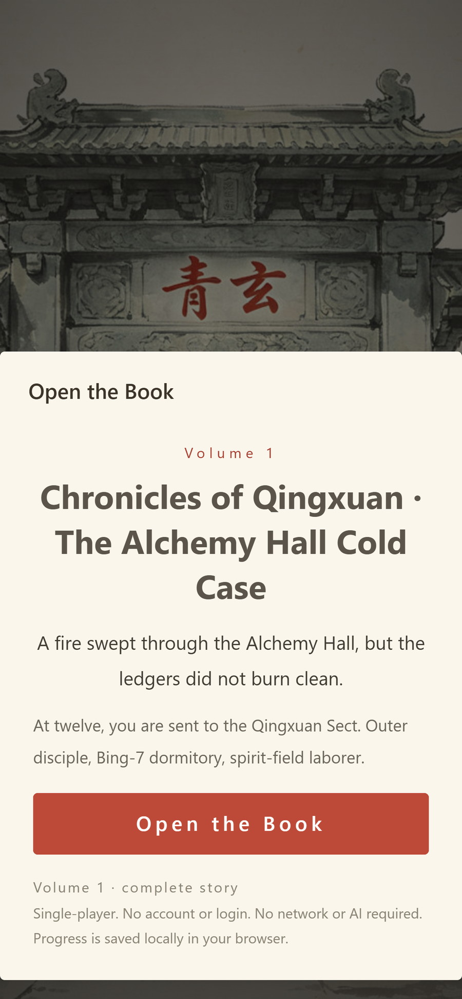
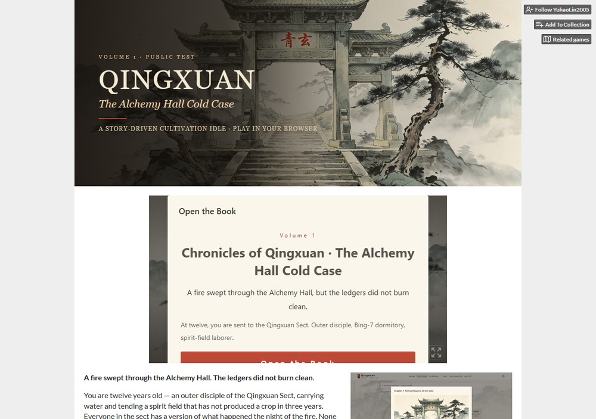
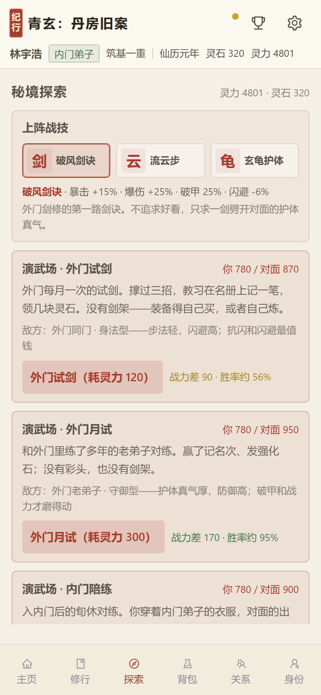
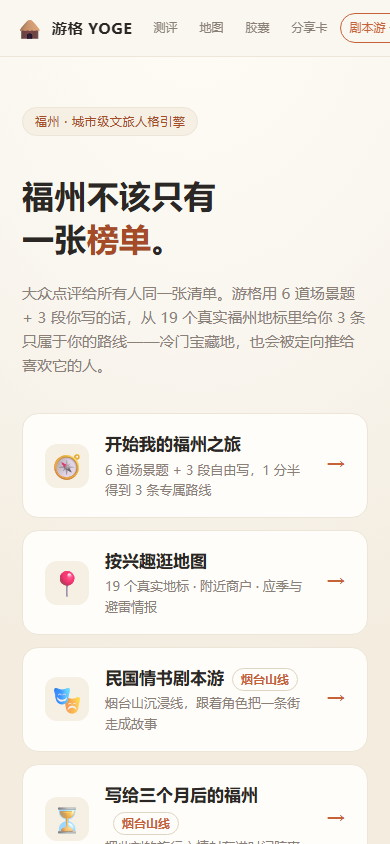
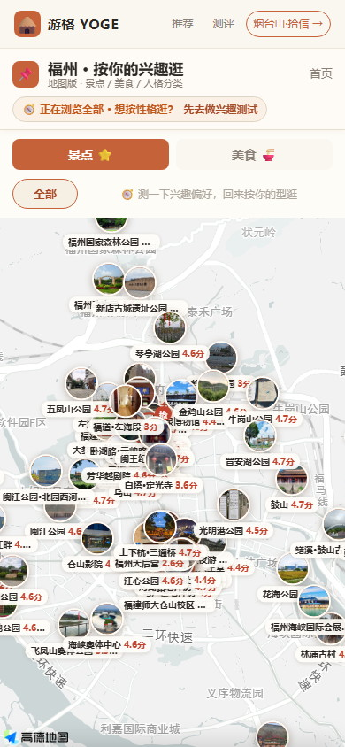
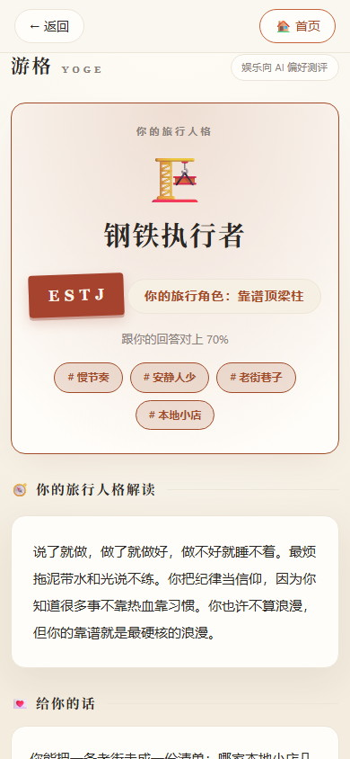
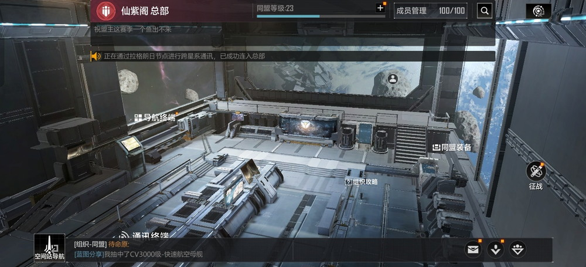
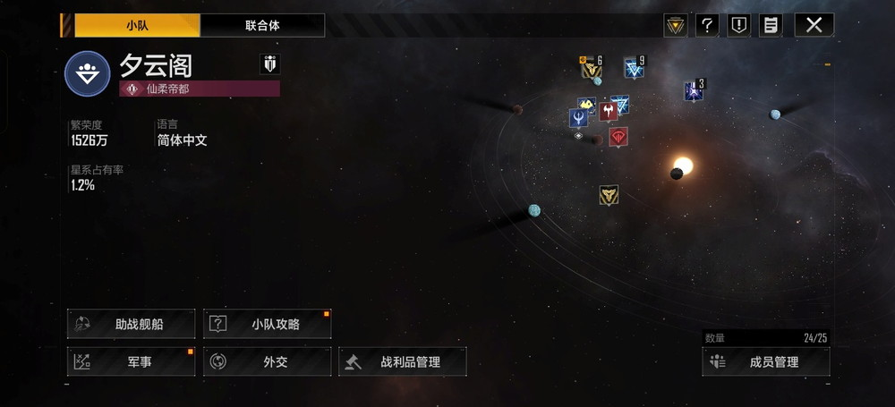
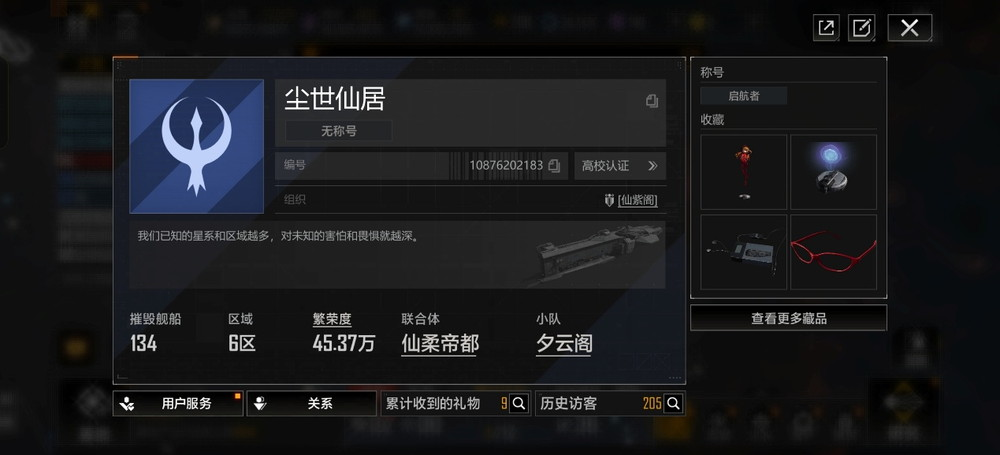

01 定位与索引
林宇浩 · 游戏系统策划 · 作品集
系统 / 玩法 / 关卡 / 配置 / 验收
2027 届统招本科 · 福建农林大学 · 空间信息与数字技术（计算机类）
可实习 3 个月以上 · 每周 4–5 天 · 杭州 / 上海 / 广州均可
我做过两个项目：一个自己从头补完，一个在 48 小时的团队里把范围砍到能上线。
《青玄纪行》把剧情、任务、奖励、文案拆成 4 张配置表，公开上线前走完 12 章 / 8 个结局，修掉 3 个会卡住玩家的问题；《游格 YOGE》负责需求、第一版范围和上线检查，上线前发现源码和配置能被公网下载，改完复验。下面这条链，是青玄演武场里最有价值的一次改动。
一次完整的判断链 · 青玄演武场
固定 780 战力 → 3 套战技 × 3 个对手 × 1000 局 → 玄龟对内门 42%，不带战技 0.1% → 净提升最小 → 拆开看，代价压在“降对手闪避”上，身法流被一起砍掉 → 把代价挪到暴击 -5% → 复跑对试剑 63%，三档都有可行解。
数字不是结论；矛盾在哪、改哪个阀门、改完谁得到什么，才是。
为什么是这五款
不是按热度挑的。阴阳师玩得最久，能看清资源出口怎么决定日常；星际猎人让我站在联合体普通成员的位置看组织和赛季；第五人格、航海王是两种竞技——一个非对称，一个横版格斗；爆炒是反面参照，机制极轻，压力全在内容和运营。五款合起来，覆盖长线 RPG、SLG、竞技、轻量经营、IP 改编五种系统底座。
拆的顺序：先找资源从哪来、往哪去，再看日常和活动是不是在给出口供血；然后量付费点和收集线隔多远；最后才问，如果我来改，先动哪张表、会卡住谁。
另一条链在游格：48 小时，完整地图做不完 → 砍到 19 个地标、3 条路线、3 个结局，只保主线 → 上线前 9 项检查，发现源码和配置能被公网下载 → 改访问设置复验 → 把检查固化成脚本。范围是砍出来的，不是一开始就有。
游戏经历（按品类）
| 品类 | 游戏 | 时长 | 付费 |
|---|
| 长线卡牌 / 养成 | 阴阳师 | 4 年+（多次回坑） | 300 元+，月卡为主 |
| 沙盘 SLG | 星际猎人（原无尽的拉格朗日） | 1.5 年，多赛季 | 0–少量 |
| 非对称竞技 | 第五人格 | 2 年 | 6 元首充 |
| 放置 / 模拟经营 | 爆炒江湖 | 2 年+ | 首充 6 元 |
| IP 改编 / 格斗 | 航海王：壮志雄心 | 137.6h（账号记录） | 两次首充共 12 元 |
| 开放世界 / 买断 | 原神 / 崩坏3 / 星穹铁道 / Steam | 原神 2 年+；崩3 3 年+；崩铁 1 年；Steam 400–500 元 | 月卡 / 少量 / 买断 |
TapTap 两个账号 3162 / 2257 天，126 款手游；上表为深度体验与代表性品类。完整表见简历第 2 页。
后面：02–03 青玄纪行（系统的拆法、配置与 780 复跑）· 04 游格 YOGE（48 小时范围与上线）· 05 阴阳师 · 06 星际猎人 · 07 第五人格 · 08 爆炒江湖 · 09 航海王 · 10 项目复盘与联系
02
《青玄纪行》第一卷：系统、关卡与第一版范围
2026.09 – 至今
放置修仙 · MIT 开源框架二次开发 · 角色：系统 / 关卡 / 配置 / 验收
边界：上游框架与上游原有美术不属于本次工作；本次补的是第一卷内容、配置、演武场与战技、部分界面和场景人物图。
在成熟的放置框架上补一条能读完的 12 章分支故事，让“挂机”不只是数值上涨，而是每次回来都有事发生。
目标用户
碎片时间玩、能接受文字、喜欢修仙 / 网文叙事、不想被强社交和强付费推着走的玩家；单次 5–15 分钟，通勤、午休、睡前。
核心循环
挂机吐纳 → 修为 / 资源 → 突破 → 解锁章节 / 系统 → 事件选择 → 结果 / 暗流记录 → 下一章钩子。
挂机
吐纳
›
修为
资源
›
突破
解锁
›
事件
选择
›
后文
读取
第一版范围
| 模块 | 内容 | 验收 |
|---|
| 开局 | 来历三选一 → 路线三选一 → 道号 | 全流程走通，存档正确 |
| 12 章主线 | 每章 2–5 个选项，合计 40；8 个结局 | 每章可触发，章末钩子兑现 |
| 配置表 | 道具 / 任务 / 奖励 / 文案四类 | 跨表引用可查 |
| 降级 | AI 只解释已选选项，不改主线 | 失败不阻塞主流程 |

手机端：390px 宽可完成主要操作。

公开试玩页：英文默认，包体、文案、截图逐项核对。
yuhaolin2005.itch.io/qingxuan-volume1（国内网络可能打不开）
关键流程
| 环节 | 玩家动作 | 设计目的 |
|---|
| 开局三步 | 来历 → 路线 → 道号；删掉“三支签结果相同”的抽签 | 3 分钟内做出第一个有后果的选择 |
| 章节事件 | 读压抑段 → 2–5 个带代价的选项 → 结果 + 数值 + 暗流记录 | 选择在后文被读到，不是结算页数字 |
| AI 降级 | AI 只解释已选选项；失败 / 超时 / 无 key 不阻塞主线 | 内容成本可控，主线不被模型接管 |
交付价值：把内容、配置、验收拆开，后续加章节不用改底层；玩家看到的每个选择，都能在后文找到读取点。
设计取舍：删掉没有决策的步骤
开局原来 5 步，收到 3 步；删掉 2 个没有后续的分支；三支签的结果相同，只保留形式，不保留抽签。离线收益封顶，自动突破改成玩家确认。每个改动都对应一个玩家动作：少一次无意义点击，多一次有后果的选择。
公开试玩页：yuhaolin2005.itch.io/qingxuan-volume1 · 国内网络可能打不开。
03
《青玄纪行》第一卷：配置、上线检查与 780 战力测试
2026.09 – 至今
放置修仙 · 角色：配置 / 验收 / 数值验证
第一版 12 章、40 个选项、8 个结局，每个选项在后文都有读取点；剧情、任务、奖励、文案拆成四张表——改一个数，能追到章节、结局和验收点。
背景
上游只有修炼循环、灵草和丹药表，以及几段后台任务；第一卷没有正文、没有配置结构，也没有上线检查。
目标
不改上游核心循环，做出可公开试玩的第一卷；8 个结局都能走到；上线前把影响玩家的问题清掉。
动作
- 内容：12 章正文、40 个选项、8 个结局；后果写进后文，不只在结算页显示。
- 配置：道具、任务、奖励、文案拆成 4 张表；关键选择都有读取点，改一个数能追到章节和结局。
- 体验：开局 5 步收到 3 步；删掉 2 个没有后续的分支；离线收益封顶；自动突破改为玩家确认。
- 上线检查：每个结局至少走一遍，受影响的章节再走一遍。
结果
公开试玩页上线，12 章 / 8 个结局可走通；3 个问题修复后再走一遍；内容改表即可，不逐条改代码。
固定 780 战力：3 套战技 × 3 个对手 × 1000 局
| 对手 | 流云 | 破风 | 玄龟 | 不带 |
|---|
| 试剑 | 74% | 58% | 63% | 26% |
| 月试 | 83% | 93% | 35% | 16% |
| 内门 | 11% | 0.5% | 42% | 0.1% |
固定战力 780，战技只改暴击、闪避、破甲、卸力，不改战力；章节门槛和界面数字都不变。每格 1000 局。

演武场：同一 780 战力，界面给出战力差和估算胜率。
上线前修复的 3 个问题
| 问题 | 影响 | 处理 | 复验 |
|---|
| 成就页白屏 | 玩家看不到成就 | 调整模块初始化顺序 | 成就触发逐条点一遍 |
| 390px 小屏两个标签点不到 | 两个标签页进不去 | 分组 + 横向滚动 | 小屏下两个标签都点一遍 |
| 修为为负导致整档读不出 | 角色名和开关全丢 | 写入端下限 0；载入端修复性载入 | 负值档正常读取 |
交付价值：3 个问题在上线前修掉；780 战力测试给出可复现的强弱依据，而不是“感觉这套更强”。
玄龟的代价放错了位置
固定 780 战力，三套战技对 3 个对手各跑 1000 局，另跑一组不带战技。玄龟对内门 42%，不带只有 0.1%，净提升 42 个百分点；流云对试剑 +48、破风对月试 +77，玄龟的净提升在三套里最小。
问题不在强度，在代价的位置：玄龟靠“降对手闪避”换胜率，而试剑档的身法流本来就靠闪避活，代价一压，三选一当场变成两选一。把代价挪到输出端（暴击 -5%）后复跑，玄龟对试剑 63%，三档都有可行解。
改完保住两件事：开打前仍有三个选择；力量型对手仍然打不过，养成投入不白费。测试在上线前完成，不用等玩家反馈再改。
配置表怎么拆
| 表 | 关键字段（举例） | 谁读 | 改一个值会影响 |
|---|
| 道具表 | id / 名称 / 类型 / 来源 / 堆叠上限 | 背包、任务、奖励 | 掉落、任务提交、背包上限 |
| 任务表 | id / 章节 / 前置 / 条件 / 奖励组 | 主线、日常、成就 | 章节解锁、奖励发放、成就触发 |
| 奖励表 | 奖励组 / 物品 / 数量 / 权重 | 战斗、活动、邮件 | 产出、经济、保底 |
| 文案表 | key / 章节 / 选项 / 结果 / 暗流 | 剧情、结局、后文读取 | 分支走向、结局判定 |
测试方法：固定 780 战力，只改战技提供的暴击、闪避、破甲、卸力，先跑“不带战技”的基线再逐套替换；每格 1000 局，差小于 5 个百分点按噪声处理。
测试记录在本地；公开试玩页：yuhaolin2005.itch.io/qingxuan-volume1 · 国内网络可能打不开。
04
《游格 YOGE》：48 小时团队作品的范围与上线
2026.08 – 2026.10
福州城市文旅 · 6 道场景题 + 3 段自由写 → 3 条路线 · 角色：需求 / 范围 / 上线检查
48 小时只做一条能走通的主线：6 道场景题 + 3 段自由写 → 19 个真实地标 → 3 条路线、3 个结局。
背景
福州城市文旅产品：产品由测评、组队、时光胶囊、剧本游四块组成。48 小时团队作品，赛后继续迭代两个月。
目标
48 小时内交付可演示版本；上线前确认外部可访问、关键页面可用；赛后继续迭代。
动作
- 分工：我负责需求、第一版范围、分工和上线检查；UI 和程序由队友完成。
- 范围：先砍掉非主线，只保留答题、路线、点位；19 个地标、3 条路线、3 个结局。
- 上线前：列 9 项检查；最严重的是源码和配置文件能被公网直接下载。改网站访问设置后确认打不开；服务在自有云服务器。
- 上线后：一次服务打不开，查日志和运行状态定位原因；重启后逐页点一遍；后来把上线前检查写成脚本。
结果
48 小时完成可演示版本，赛后迭代两个月；产品在线；9 项检查固化成脚本。线下点位和 NFC 需要文旅资源配合，当前版本没有落地。
四块功能
| 模块 | 作用 | 状态 |
|---|
| 测评 | MBTI 选择题 + 自由简答；简答补上选项抓不到的具体想法，AI 解读后再给推荐 | 已上线 |
| 组队 | 朋友一起答，生成共同路线，结果可以分享 | 已上线 |
| 时光胶囊 | 记下某一刻的照片和心绪，过一段时间以短信等方式推回，给再来一次一个理由 | 已上线 |
| 剧本游 | 19 个地标 → 3 条路线、3 个结局 | 已上线 |

首页：6 道场景题入口

地图：19 个真实地标

结果页：人格 + 3 条路线
交付价值：48 小时不是卖点，范围控制才是。先保证可演示、可访问、可复验，再谈扩展；9 项检查后来固化成脚本。
事后看，9 项检查应该在开工前就写；上线后的第一个问题，不在检查过的项里。
05
《阴阳师》：图鉴、御魂与寮社交
4 年+ · 300 元+
长线卡牌 / 养成 · 官服 + 渠道服 + 多个小号 · 玩家侧观察
阴阳师的长线不是剧情，是两条互相供血的线：全图鉴收集，和御魂随机养成。寮社交把单人刷本变成群体日常。
核心循环
日常 / 周常 / 活动 → 体力、勾玉、金币 → 抽卡 / 刷御魂 → 图鉴 / 强度 → 新角色 / 新版本 → 回流。
日常
周常
›
体力
勾玉
›
抽卡
御魂
›
图鉴
强度
›
版本
回流
两条主线
图鉴：闭合欲驱动资源积累、抽卡和版本回流；新角色、新皮肤、衍生产品持续补目标。
御魂：把成长转移到随机属性探索上；高养成阶段靠词条继续提供空间，但也会放大试错成本和目标空窗。
寮社交
阴阳寮、鬼王、宴会、附近、跨服，把“我要刷”变成“我们一起刷”。社交降低长线疲劳、强化目标共识，也会带来打卡压力和组织摩擦。
两条线的代价
| 系统 | 收益 | 代价 | 可调阀门 |
|---|
| 图鉴 | 长线目标、版本回流 | 收集压力、错过焦虑 | 保底、碎片兑换、复刻节奏 |
| 御魂 | 探索感、搭配深度 | 随机疲劳、试错成本 | 阶段保底、定向筛选、无效属性回收 |
| 寮社交 | 协作、沉没成本 | 打卡压力、组织摩擦 | 寮任务分层、可跳过、回流补位 |
我会先动哪个阀门
不先降随机——降了就失去探索感。先做无效词条回收，再做阶段保底；但回收要改御魂表、加回收入口、处理存量御魂，排期跨一个版本，所以先做一个。
三条互相供血的链路
| 链路 | 起点 | 中间 | 终点 | 断掉会怎样 |
|---|
| 体力 → 御魂 → 金币 | 日常 / 周常 | 刷御魂、强化 | 战力、金币循环 | 日常没事做，强化缺钱 |
| 抽卡 → 图鉴 → 寮任务 | 版本 / 活动 | 新角色、新皮肤 | 寮 30、组队、协同 | 新角色只躺在图鉴里 |
| 活动 → 外观 / 资源 | 版本活动 | 皮肤、礼包、兑换 | 付费与回流 | 活动只剩数值奖励 |
日常周活不是独立系统。后期式神等级很容易拉满，成长空间几乎只剩御魂，所以日常、周常、活动真正在做的，是同时给两条线供资源：刷御魂要体力和金币，追全图鉴要勾玉和活动奖励。玩家不是在“完成任务”，是在推进自己本来就要的目标；一条线断了，日常就先变成打卡。
两条线什么时候打架
新角色强，图鉴和强度合一，抽到就是战力，抽卡动力最足；新角色弱，收集线只剩“补图鉴”，玩家会跳过这个版本等复刻。所以式神强度不能只按 PVP 调，它同时决定图鉴线这个版本有没有人追。
美术是钩子，不是发动机。和风美术负责第一眼和回归时的审美期待，但每天上线做的是日常、刷御魂、追图鉴；美术撑不起 4 年，能撑住的是两条线还在给新目标。
四年里最明显的三次疲劳
图鉴追不上。新角色越出越快，图鉴从“收集”变成“追进度”；复刻和新皮肤能把老角色的价值拉回来，但补不齐中间断掉的版本。
御魂强化歪。中期靠词条提供搭配深度，但“刷不到”和“强化歪”叠在一起，金币、狗粮、时间同时被消耗；玩家不是不会配，是试错成本太高。
寮任务变成打卡。协作把日常绑到固定时段，寮 30、鬼王、宴会都要人齐；跨服和附近补了弱社交，但没有解决“今天不上就拖累别人”的组织压力。
来源：本人账号体验（官服、渠道服、多个小号；4 年+，300 元+，月卡为主）；未使用未公开的内部数据。
06
《星际猎人》：赛季、联合体与资源调度
1.5 年 · 多赛季
原《无尽的拉格朗日》｜沙盘 SLG · 联合体成员（玩家侧）· 2026-01 起改名《星际猎人》
这不是一个养船打架的游戏，是一套模拟组织、权力、协作与信息博弈的系统。赛季重置是它的续命机制，也是资产焦虑的来源。
核心循环
个人舰船 / 科技 → 资源 / 航线 → 联合体任务 / 攻城 → 赛季结算 / 重置 → 新赛季。
舰船
科技
›
资源
航线
›
联合体
任务
›
赛季
结算
›
重置
新局
四条系统
联合体角色：指挥、外交、后勤、侦察、攻坚、执行；玩家在信息不对称和资源约束下做集体决策。
资源调度：谁铺路、谁守矿、谁外交，都会影响一个赛季的体验；联盟不是聊天功能，是一套经济、信任、权力和信息的设计。
赛季重置：定期打破固化格局，让新势力、新策略和新联盟有切入机会；同时放大资产焦虑。
保护机制：紫币保底、新手保护、任务引导，用来平衡随机试错成本和新玩家门槛。
为什么联合体才是主角：它把指挥、外交、资源调度、侦察、攻坚、后勤拆成不同位置，站在哪个位置，看到的战场和要做的决定完全不同。对大多数玩家来说，现实里很难接触到这种组织决策，游戏卖的就是这段体验。
为什么赛季必须重置：如果领地、资源和优势永久保留，第一赛季的强者会一直碾压后面所有人，新联合体没有切入空间。赛季把地图和关系重新洗牌，但舰船、科技、人脉可以带走——数值优势不能永久决定胜负，组织能力才是可积累的资产。
保底只解决一半问题：抽船和模块是随机的，紫币保底让“抽不到”有底线；但保底管不了“抽到了，赛季结束用不上”。真正影响留存的是赛季保留清单——哪些资产下赛季还能用，玩家在赛季末会先算这笔账。

总部：导航 / 装备 / 组织攻略 / 征战在同一屏；同盟等级 23，成员 100/100。

小队：繁荣度 1526 万、星系占有率 1.2%、24/25；地图上能看到成员舰队位置。

玩家侧：6 区 · 摧毁舰船 134 · 繁荣度 45.37 万；只写联合体成员，不写联盟职务。
组织沉浸的代价
| 矛盾 | 收益 | 代价 | 可调阀门 |
|---|
| 组织沉浸 | 协作、身份、信任、沉没成本 | 责任绑定、时间投入、指挥链失效 | 角色分层、参与深度选择、轮换 |
| 赛季重置 | 打破固化、给新势力机会 | 资产焦虑、老玩家流失 | 保留清单、追赶机制、失败补偿 |
| 付费便利 | 降低随机试错成本 | 付费与博弈公平的边界 | 保底、便利不买断结果 |
先接住被组织拖住的人：角色分层、参与深度选择、赛季保留清单和追赶机制；再谈新玩法。组织沉浸是卖点，但不能变成强制任务。落地先做保留清单——只改结算和资产表；追赶机制要新开入口，排期更长，放第二步。
截图：本人游戏账号；不涉及现实身份信息。玩家侧观察，不写服务器头部、联盟职务、营收或 DAU。
07
《第五人格》：1v4 的博弈与挫败控制
2 年 · 6 元首充
非对称竞技 · 早期恐怖追逐 → 竞技对抗 · 玩家侧观察
第五人格早期靠恐怖氛围把人拉进来，后来恐怖被弱化，留下来的是 1v4 的信息差和博弈。它的系统比阴阳师、拉格朗日都简单，难的是让每一次选择都有代价。
核心循环
监管者追击 vs 4 名求生者修机 / 救援 / 牵制 → 开门 / 淘汰 → 结算 / 段位 → 新角色 / 新地图。
追击
牵制
›
修机
救援
›
开门
淘汰
›
结算
段位
›
新角色
新地图
恐怖是钩子，博弈是底盘
早期版本锚定悬疑、追逐、压迫感，恐怖负责拉人；版本合规和受众扩大后，恐怖被持续弱化，留下来的底盘是非对称对抗：监管者掌握追击、控场、挂人，求生者掌握修机、救援、牵制，密码机、板窗、地窖都是信息节点。一局很短，但每个选择都有代价。
三个可调阀门：修机进度决定双方的时间压力；救援时机把个人操作变成团队决策；板窗和地图信息决定牵制时长与信息差。三者里，地图结构比单角色数值更容易改变对局体验。
角色是决策工具包
监管者和求生者的差别不是数值高低，而是能提供哪种对局思路：追击、封锁、干扰、救援、辅助、破译。新角色的价值是往博弈池里加变量；平衡要看交互链——这个技能能被什么反制、这个套路能被什么打断，而不是只看单角色胜率。
为什么它只能卖外观
对局能力主要由玩家理解和操作决定，角色可以用局内线索解锁，皮肤、挂件、动作不影响数值。它没法像阴阳师那样靠养成深度变现，收入只能落在外观、赛季和联动上。系统简单、低门槛把盘子做大，再靠外观和身份认同收钱——这是它和长线养成、沙盘 SLG 最大的不同。
它最怕什么
新手被信息差碾压、强势组合挤掉其他角色、匹配和外挂拖垮对局体验。外观付费把竞技公平隔开了，但玩家的挫败感不会消失，只会转移到“这局是不是一开始就没法打”。
一局里的三段信息
| 阶段 | 监管者知道 | 求生者知道 | 关键决策 |
|---|
| 开局 | 出生点、电机分布 | 监管者大概方向 | 先修哪台、谁去引、要不要换点 |
| 中期 | 追击目标、椅子位置 | 队友位置、修机进度 | 救不救、谁去救、什么时候放弃 |
| 残局 | 门、地窖、留下的人 | 开门进度、监管者位置 | 保平还是争胜、谁去卡门 |
一个具体场景：剩 1 台机，队友上椅，监管者守椅。求生者能选“救”“压机”“换门”；救有双倒风险，不救则少一个队友但保住修机节奏。这里没有标准答案，平衡要做的是让三种选择都有代价、也都有收益，而不是让某一种永远正确。
角色设计的三条边界：独特性决定玩家为什么选它，反制空间决定对手有没有得打，学习成本决定新玩家能不能上手。三条缺一条，角色就会变成“强但没人玩”或“有人玩但对面没体验”。
如果只改一个地方：先改地图和信息窗口，再动角色数值。地图决定牵制时长和信息差，改一张图影响的是所有角色；改一个角色的数值，只会把强势位从 A 挪到 B。但改地图要重跑所有角色的牵制和转点数据，程序、关卡、美术都要动；改单角色数值只要改表。
版本变化的代价：恐怖元素越弱，拉新越依赖角色和联动；新角色出得越快，旧角色的辨识度和上场空间越容易被挤掉。平衡不是把每个角色调到 50%，是让每个角色都有至少一种能被选中的理由。
来源：本人账号体验（2 年，6 元首充）；早期恐怖版本与后续竞技化都经历过。角色可用局内线索解锁，皮肤、挂件、动作不影响数值，均按游戏内实际机制写。玩家侧观察，不冒充战斗策划。
08
《爆炒江湖》：离线收益与低压力收集
2 年+ · 首充 6 元
放置 / 美食模拟经营 · 玩家侧观察 · 首充 6 元已联网核验
放置经营不能给压力，但又必须持续给一个回来的理由。爆炒江湖把这件事压在两条线上：收集和轻养成；真正让它不饱和的，是持续不断的联动。
核心循环
上线收菜 → 做菜 / 卖菜 → 金币 / 资源 → 升级厨房 / 招募厨师 → 菜品 / 图鉴 → 厨神大赛 / 活动 → 回流。
收菜
做菜
›
金币
资源
›
厨房
厨师
›
菜品
图鉴
›
大赛
回流
两条主线
轻养成：厨师分一火到五火，升阶解锁技能和厨具位，每升一阶开业时能多做一道菜；菜品等级、厨房、装备和天赋把收益转成成长。
图鉴收集：厨师、皮肤、限定角色；收集欲是主驱动，联动持续引入新画风、新主题，避免图鉴快速饱和。
厨神大赛与排行
放置产品里最集中的思考点：搭配厨师、菜品、装备与天赋，在有限条件下追高分。它给休闲产品一点决策深度；排行榜和公会是最容易引氪、也最容易引反感的点，所以必须可选，不能变成每日压力。
为什么联动是主更新方式
联动一次带来新厨师、新菜谱、新画风和新话题，同时补图鉴；罗小黑 / 蓝溪镇、厨神小当家、大王不高兴都按这个逻辑做。代价是联动角色常放进礼包，图鉴从“玩出来”变成“买出来”，没买的玩家会觉得收集线被切掉一段。
它的难处不在系统
机制复杂度不高，难的是持续给新角色、新画风、新联动，压力在运营和美工。系统策划在这里要做的是把联动接入做成配置流程，让新角色、新菜品、新活动按表上线，而不是每次改代码。
真要动，先看四张表：角色、菜谱、活动排期、礼包。联动结束还要处理限定角色返场和存量图鉴的兼容；版权方审核、美术档期、运营节奏要提前一个月排，不是策划单方面能定。
内容接续的四种手段
| 手段 | 作用 | 风险 |
|---|
| 新菜品 / 新厨师 | 补图鉴、加养成线 | 数值膨胀、旧角色贬值 |
| 联动 | 新画风、新主题，拉新和回流 | 版权与接入成本；联动结束后的空窗 |
| 季节事件 | 填内容空窗，给短期目标 | 重复感、换皮感 |
| 厨神大赛 | 策略深度、集中目标 | 排行榜内卷，休闲玩家被推着走 |
低压力不等于没目标：它只是把目标拆得更碎、允许玩家自己选节奏。真正难的是内容消耗完之后，还能给一个“明天再来看一眼”的理由；这靠的是接续手段的组合，不是把数值调高。
它怎么赚钱，钱从哪来
| 付费点 | 玩家为什么买 | 代价 | 可调阀门 |
|---|
| 角色 / 皮肤 | 画风、图鉴、身份表达 | 图鉴饱和，旧角色贬值 | 复刻节奏、保底、图鉴分层 |
| 联动礼包 | 限定、错过恐惧 | 图鉴被切成付费段 | 礼包与免费获取的强度差 |
| 厨神大赛 / 排行 | 竞争、公会目标 | 休闲玩家被推着走 | 排行可选、奖励分层 |
| 广告 | 零氪也能拿资源 | 打断放松节奏 | 频次、是否可选观看 |
这里的系统工作不是“设计一个付费点”，是控制付费点和收集线的距离。礼包角色太强，零氪的图鉴线就断了；排行奖励太重，休闲玩家就被推着卷；广告太密，放置产品的松弛感先没了。三个阀门要单独调，不能一起加。
来源：本人账号体验（2 年+，首充 6 元）；首充金额见 TapTap 评价 与 52xz 攻略；联动角色与礼包见 ZOL 罗小黑联动攻略。未使用未公开的内部数据。
09
《航海王：壮志雄心》｜IP 改编与格斗长线
137.6h · 0–少量
海贼王 IP 横版格斗 · 2024-12-19 公测 · 玩家侧观察
IP 解决第一次下载，解决不了第 30 天还愿不愿意打。横版格斗的长线，最后落在 PVP 平衡、角色养成和日常目标上。
首周 iOS 预估
3,700 万
人民币 · 第三方估算
公测 5 天 iOS
2,700 万
首日 390 万 · 第 4 天峰值 710 万
我的体验
137.6h
TapTap 账号记录 · 0–少量付费
核心循环
剧情 / 关卡 → 角色 / 装备 → 养成 → PVP / 竞技 → 赛季 / 活动 → 新角色。
剧情
关卡
›
角色
装备
›
养成
战力
›
PVP
竞技
›
新角色
新赛季
三个系统
角色收集 / 养成：IP 角色是第一批钩子；抽卡、升星、装备、等级把“喜欢这个角色”转成长期投入。
PVP 匹配与平衡：横版格斗的对抗是长线核心；角色强度、技能交互、匹配和网络体验，都会直接影响留存。
日常 / 活动目标：剧情打完以后，玩家需要新的每日理由；日常、活动、赛季和新角色要接得上，否则 IP 只能拉第一波。
这组数说明什么：2,400 万预约和首周 3,700 万只证明 IP 兑现了第一次下载；第 4 天冲到 710 万，说明首周还在靠活动和角色拉曲线。真正决定能不能过 30 天的是 PVP 平衡和日常目标，这两件事在首周数据里看不出来。
IP 改编最难的是两个目标打架：新角色要卖，PVP 要公平；角色出得越快，旧角色的上场空间越小。横版格斗的操作门槛又比 MOBA 高，匹配池一分层，新手被连招打退，高手嫌对手不够。
三笔账不能同时拉满
IP 还原度越高，玩法越容易被原作框住；角色出得越快，PVP 越难公平；首周买量越猛，D30 的目标链越容易被掩盖。三件事只能选这个阶段最该保的一件：首周保还原和买量，第二周开始把资源挪到 PVP 平衡和日常目标，否则首周曲线越漂亮，后面掉得越难看。
落地会卡在哪
调 PVP 平衡要动角色表、技能参数和匹配分段，还要处理已养成玩家的补偿；改一个胜率数字，背后是程序、数值、运营三条线一起动，排期不可能按天算。
IP 改编的三段目标
| 阶段 | 主要目标 | 常用手段 | 失败信号 |
|---|
| 预约—首周 | 下载、首周流水、榜单 | IP 还原、预约奖励、买量 | 首周高，次周掉得快 |
| D7–D30 | 留存、日常习惯、首个养成目标 | 日常、养成、PVP、活动 | 剧情打完就没事做 |
| 长线 | 赛季、角色、赛事、回流 | 新角色、平衡调整、联动 | 角色强度失衡、匹配体验差 |
如果做 IP 改编，我会先问四个问题：IP 的哪个体验必须保留？第 30 天玩家为什么回来？PVP 和养成的边界在哪？新角色上线怎样不打碎旧角色？这四个问题答不清，还原度再高也只能吃第一波。
来源：36kr / 点点数据（预约 2,400 万、首周 iOS 3,700 万、5 天 2,700 万、首日 390 万、第 4 天峰值 710 万，均为第三方估算）；本人 TapTap 账号记录 137.6h。未使用未公开的内部数据。
10 项目复盘与联系
两个项目做完，留下来的五条习惯
不是先有一套方法再往里套；是青玄和游格各踩了一次坑，才知道下次先看什么。
01 能落到配置，就不先改代码
青玄原框架把剧情、任务、奖励写在代码里。我把道具、任务、奖励、文案拆成 4 张配置表，关键选择在后文有读取点；加章节、调奖励、改分支只改表。后来改一句文案不用翻代码、重新打包，验证快了很多。
02 数值改动先固定变量，再谈手感
演武场原来只比战力，够就赢。固定 780 战力，3 套战技 × 3 个对手各跑 1000 局，才发现玄龟对内门只有 42%，不带战技 0.1%，净提升最小；问题不在强度，在「降对手闪避」把身法流一起砍掉。把代价挪到暴击 -5% 后复跑，对试剑回到 63%，三档都有可行解。
03 验收按玩家路径走，先修会卡住人的
青玄公开试玩前，我把主线、8 个结局和读档全走了一遍，拦下 3 个阻塞问题：成就页白屏、390px 两个标签点不到、存档负数整档读不出。这三个不修，玩家不是觉得不好玩，是根本玩不下去。
04 检查清单一定会漏，漏过的要变成脚本
游格上线前列了 9 项检查，最严重的是源码和配置能被公网直接下载；改访问设置后复验。上线后还是遇到一次服务打不开，查日志和运行状态定位、重启、逐页复点。事后把能自动化的检查写成脚本，下次改版不用重踩。
05 拆解先看资源从哪来、往哪去
五篇拆解都先找资源出口，再看日常和活动是不是在给它供血；然后量付费点和收集线隔多远；最后才问，如果我来改，先动哪张表、会卡住谁。这样写出来的不是「这个系统好不好玩」，是它在让谁做什么。
两个项目教我的同一件事：先把范围砍到能交付，再用可复跑的结果说话；感觉不对的地方，拆到具体字段和具体代价。
没做完的部分
游格的 NFC 和线下点位要文旅资源配合，当前版本没落地；比赛结束后也没有继续验证留存。青玄第一卷能稳定跑完，但离「可以长期更新」还有距离——这两块我没在这一版里假装做完。
联系
2027 届统招本科，可实习 3 个月以上，每周 4–5 天，杭州 / 上海 / 广州均可；下面的链接可以直接看项目和试玩。